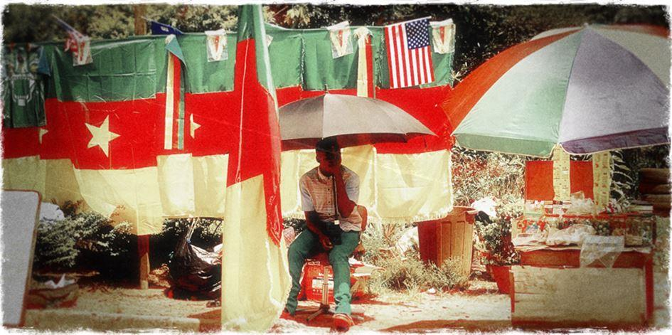
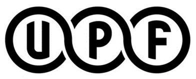
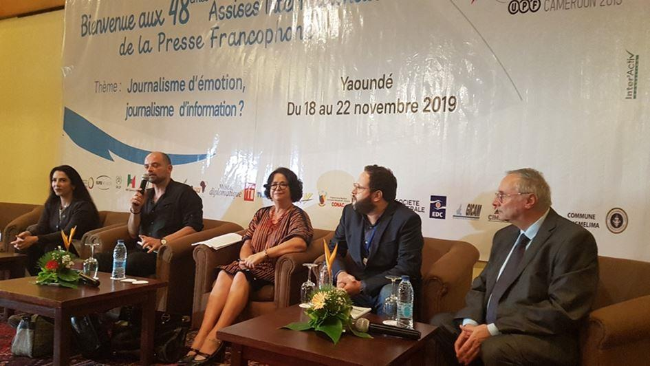
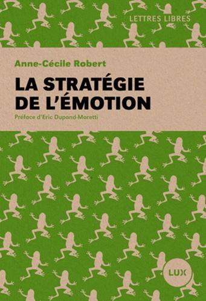
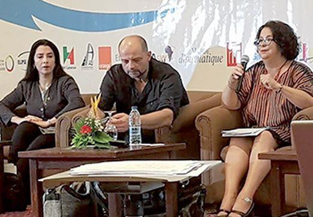

Carnet de route d’une excursion inattendue : les 48es Assises de l’Union de la presse francophone au Cameroun.
Lorsque M. Jean-Pierre Molliet m’a contacté pour me proposer de faire partie de la délégation suisse aux Assises de la presse francophone, ma première pensée a été pour la belle devise que nous a adressé notre lecteur Bruno Borghi : « En ces temps orwelliens, l’Antipresse, c’est LA presse. » Eh oui, cette invitation m’a confirmé que ce qui était au début une simple lettre aux amis est devenue un « média » à part entière, participant de manière directe à cette évolution-hybridation qu’il est convenu d’appeler les « nouveaux médias ». Cette virée camerounaise est mon premier séjour — trop bref — en Afrique noire. Ce carnet de route mêle mes observations personnelles aux réflexions plus générales suscitées par les rencontres et les débats auxquels j’ai participé.
Dimanche 17 novembre
On ne nous avait pas menti, la nuit africaine est plus sombre que la nuit d’Europe — et elle tombe bel et bien comme un couperet. L’avion s’est posé dans le noir complet, on ne voyait aucune lumière, pas même le marquage de la piste. Après d’interminables va-et-vient assortis d’ordres contradictoires au sujet de l’obtention des visas de courtoisie, nous nous sommes embarqués dans des bus en direction du centre-ville.
On traverse des kilomètres de bidonvilles, puis de faubourgs modestes faits de maisons basses avec, chacune, une ampoule chevrotante dans l’entrée. Même l’éclairage public est comme atténué. Les bourgades de Bosnie, au plus fort des combats, étaient mieux éclairées : cette pensée m’est venue d’emblée, Dieu sait pourquoi.
Beaucoup de ces maisonnettes font office de petits magasins ou de cafés. Devant, sous le porche ou dans la véranda, sont assis des hommes en assemblées compactes, comme s’ils complotaient, et ils boivent de la bière. J’aurais voulu faire un tour, un de ces soirs, dans ces auberges de fortune, les conversations doivent y être animées. Mais on me dit qu’il n’est pas très recommandé de fureter dans cette ville la nuit.
Lundi 18 novembre
Sitôt débarqué de l’avion, j’ai été frappé par cette senteur de bois brûlé qui serait commune à toute l’Afrique. Ce matin, j’ai ouvert la baie de ma chambre climatisée au septième étage et elle a immédiatement été envahie par l’odeur du feu. Comme si on boucanait quelque chose à côté de moi.
Je profite de la journée pour faire connaissance avec les collègues et marcher un peu aux alentours. La ville est laide, comme jetée à la hâte dans une friche, au milieu de la forêt. Les métropoles subtropicales sont la preuve de faillite la plus éclatante de la civilisation du nivellement global. Les visages et les couleurs sauvent la mise. Ils restent humains malgré le béton bâclé qui les héberge.
UPF. Je rencontre ici beaucoup de gens chaleureux, expérimentés, intrépides, aux horizons culturels, professionnels très divers.
L’UPF a quelque chose d’une arche de Noé. En tant qu’outsider, je fais une découverte précieuse : celle des réticences intestines de la profession face au nivellement, aux pressions et à l’appauvrissement dont elle est l’objet dans les médias de grand chemin. Les Occidentaux de cinquante ans et plus ne s’attendaient sans doute pas à se retrouver dans les tenailles de la compromission comme leurs confrères soviétiques de l’époque. Ils n’y étaient donc pas préparés. Chacun affronte seul ce défi éthique, chacun choisit (quoi qu’on en dise) de quel côté de la force il va basculer. Le plus cuisant est de voir ceux qui noient ce dilemme dans l’agnotologie, l’ignorance volontaire.
Je note aussi que le personnel des « poids lourds » — Le Monde, Le Figaro, L’Obs etc. — brille par son absence. « Au fond, me dira Myret Zaki, on constate que dans les rassemblements de journalistes pour parler des problèmes de notre métier, le personnel de l’establishment est rarement investi et présent en force. »
Mardi 19 novembre
Bien que parfait novice, j’ai l’honneur de modérer la première table ronde 1. L’émotion dans les médias, frein ou atout pour l’information ? Sur cette question, ma religion est faite : « les deux, mon général », mais la manière dont les « professionnels de l’information » traitent ce dilemme m’intéresse profondément.
À mes côtés, mon amie Myret Zaki, Latéfa Akharbach du Conseil supérieur de la communication audiovisuelle (CSCA) (Maroc), Mehdi Khelfat, responsable « Monde » à la RTBF, François-Xavier Budim’bani Yambu, professeur de journalisme à l’université catholique du Congo et Jean Claude Allanic, ancien médiateur de France 3. À certains moments, j’oublie mon rôle de modérateur tant les témoignages me font réfléchir, en particulier l’illustration, par Allanic, d’un traitement intègre et d’un traitement démagogique d’une même séquence vidéo ; ou l’énumération des valeurs que les acteurs de l’information devraient toujours avoir en tête, par le professeur Budim’bani.
Juges et parties. Les débats sont tous intéressants, denses, concrets, suivis avec une attention passionnée. (On peut les visionner sur la page Facebook de l’UPF). Cependant, quelque chose me gêne dans le thème de cette année. Quelle place pour l’émotion dans l’information… On pourrait expédier le sujet en cinq minutes. Sur LinkedIn, réponse concise de mon ami Patrick Vallélian, fondateur de l’excellente plateforme de slow journalism Sept.info : « Aucune. » Pourtant, Dieu sait si Sept diffuse de l’émotion — et si on y est scrupuleux sur la qualité et l’intégrité des contenus. Voilà d’où vient cette gêne : on a posé l’ « émotion » comme un objet d’étude, une variable d’une équation, comme des puritains parleraient des plaisirs de la chair. Alors même qu’on ne fait rien sans elle, que toute narration d’une nouvelle suppose une dose d’émotion, par le choix de l’angle de vue, des mots, du ton…
Le journalisme moderne est gangrené par une idéologie de l’objectivité qui — le chemin de l’enfer étant pavé de bonnes intentions — aboutit à son contraire, le règne de la manipulation et de l’arbitraire. Avec le « fact checking », le détachement plus ou moins feint, on entretient le mythe d’une information impersonnelle, comme arrivant de Sirius. Dans les faits, on prépare le remplacement des journalistes par des algorithmes. Personne ne veut voir que le journalisme ne se décrédibilise pas par l’excès de subjectivité, mais son rejet. Il se meurt par manque de voix inimitables, de caractères et de « tronches ». Les petits technocrates de l’information sont d’ores et déjà remplaçables par de l’intelligence artificielle. Les journalistes de valeur allient le respect des faits à une vision du monde trempée et affichée !
Émotion, arme de guerre. L’exposé inaugural d’Anne-Cécile Robert, du Monde diplomatique, m’a frappé par sa netteté et son audace. À entendre et rencontrer de telles personnes, on a le sentiment que deux fonctions se côtoient dans une même profession, et qu’elles s’opposent de plus en plus. D’un côté, les « communicants », dociles serviteurs du pouvoir, dont la caractéristique première est l’incuriosité, et immédiatement après elle la vigilance policière à l’égard, justement, des trop curieux, prestement taxés de complotistes. De l’autre côté, ces mêmes curieux, qui s’efforcent de faire leur métier malgré le rôle complaisant qu’on s’efforce de leur faire jouer.
Serment d’Hippocrate. Par-delà les digressions et les introspections qui brouillent le paysage, la condition de journaliste est semblable à celle du médecin. Elle est encadrée par de fortes exigences éthiques. Comme les médecins, les journalistes sont de plus en plus poussés à les bafouer, et par un même système avide et prédateur orienté uniquement vers le pouvoir et l’exploitation universelle (le Gestell de Heidegger). La différence, c’est que les médecins n’organisent pas de colloques pour analyser leurs petites et grandes compromissions.
Le complotisme, dans l’univers médiatique, n’est de plus en plus souvent que l’autre nom de la curiosité professionnelle. On vous prie d’en rester au niveau phénoménologique. De surdécrire le « comment » pour ne pas aborder le « pourquoi » des choses. La gêne viscérale d’un certain nombre de journalistes lorsqu’on leur parle du rôle des services secrets et des ONG dans la conduite des manifestations « populaires » témoigne de ce conditionnement. De même leur malaise lorsqu’on leur parle du sort de Julian Assange, qui a pourtant assuré les beaux tirages de bien des journaux.
Le cas Assange, on ne l’avait pas vu venir, rivé qu’on était à l’apparence et non au sens. L’action de WikiLeaks vise justement à dévoiler la nature des choses par l’argumentation la plus incontestable, celle des faits bruts. Ce qui aura été à ce jour la plus efficace entreprise d’information du XXIe siècle a bouleversé la conscience du monde sans le moindre gramme de pathos ni d’émotion. L’attitude vis-à-vis du sort de son fondateur est un outil sûr pour distinguer ce qu’il reste de réels journalistes — ceux qui sont leur propre voix et leur propre plume — des communicants — qui sont la voix et la plume de ceux qui les paient.
L’émotion comme sédatif. Dans un journalisme qui se respecte et qui respecte son client, l’émotion doit se trouver à l’arrivée du message, et non au départ. La surcharge émotionnelle des médias de grand chemin n’est que superficiellement liée à la « concurrence » des réseaux sociaux (un vecteur dont eux-mêmes usent et abusent). Elle est surtout là pour masquer par la diversion nerveuse le conformisme et la pauvreté des contenus. Anne-Cécile Robert a consacré un livre à l’émotion comme arme de guerre. Elle rappelle des évidences si brutes qu’elles en sont devenues politiquement incorrectes, tant il est vrai que nous sommes arrivés à l’époque prédite par Chesterton « où le fait d’appeler un triangle une figure à trois côtés sera poursuivi comme une hérésie ». L’émotion dans l’information n’est pas un excitant, c’est un sédatif. Elle démobilise et dépolitise. « Indignez-vous ! » ordonnait d’une voix vibrante un militant hypersensible et cacochyme. On a acheté sa brochure, on s’est indigné et… quoi ? Le niveau de réactivité civique des populations ainsi « indignées » n’a fait que baisser jusqu’au zéro absolu. L’hyperclasse l’a très bien compris. Elle vous abreuve d’émotions, y compris contre elle-même — tout passe pourvu que la logique, la raison et la volonté restent hors-jeu. Le philanthro-capitalisme des milliardaires — incarné notamment par sa nouvelle prêtresse Greta Thunberg — est l’aboutissement naturel du journalisme bien-pensant et bien-sentant.
C’est une rhapsodie du changement dont le but est que surtout rien ne change.
L’émotion est mobile et malléable comme le pinceau du projecteur sur une scène de théâtre. Elle moralise tout. La transformation des enjeux politiques et sociaux en enjeux moraux est le meilleur moyen de les éteindre. Le sociétal est la mort du social.La Stratégie de l’émotion2 complète la Stratégie du Choc de Naomi Klein. La conversation de son auteure est vivifiante. On se dit que la bêtise de convention n’a pas encore tout envahi. Que quelques arches de Noé surnagent dans ce déluge.
Mercredi 20 novembre
J’ai provoqué un petit tollé lors de la deuxième table ronde en comparant les mouvements de masse de ces dernières années à des vols d’étourneaux. La nuée est compacte, mobile, elle coordonne parfaitement ses mouvements… mais elle n’a pas de tête.
À mes yeux, un mouvement destiné à changer les choses démocratiquement se distingue d’une masse sans tête par des revendications précises et par un groupe de leaders représentatifs, responsables et à ce titre éventuellement arrêté. Cela n’entre plus du tout dans les vues nébuleuses des chantres de la démocratie des foules. A creuser un peu, on se rend compte que cette « démocratie » idéale est un esprit, un parfum, une pure idée. Si vous les mettez au pied du mur : « Vous êtes donc pour la volonté absolue de la majorité telle qu’exprimée dans la rue ? », le dialogue dérive aussitôt vers les aménagements (mis en place par qui ?). Si vous demandez où et quand ces révolutions, depuis le renversement de Milošević en 2000 jusqu’en Ukraine, Algérie ou Hong Kong, ont abouti à une amélioration concrète et durable de la représentativité populaire, c’est encore une fois le silence. Il apparaît en fin de compte que la poursuite de la Démocratie (avec grand D) s’apparente au lièvre mécanique des courses de lévriers. On fixe l’attention et le désir de la troupe sur une proie qu’elle n’atteindra jamais.
Jeudi 21 novembre
En route pour l’aéroport, cette fois de jour. Les embouteillages nous font avancer au pas. Le chauffeur du Hilton, qui connaît son affaire, nous emmène à travers des bidonvilles invraisemblables, emplis d’une humanité bruyante, torse-nu, affairée. Après plus d’une heure de route au pas, nous sommes bloqués sur le bas-côté de la route par un sergent autoritaire. Un convoi présidentiel est annoncé et il s’agit de lui faire face. « Je ne veux voir aucun véhicule le long de cette avenue », braille le sous-officier zélé qui fait la circulation. On oublie trop vite qu’un des charmes des régimes autoritaires, c’est qu’ils permettent à chacun de leurs rouages d’être un micro-potentat dans son petit rayon d’action.
Pendant que nous attendons, au crépuscule, le passage du bastringue officiel, je descends de voiture et tombe sur un jeune albinos qui sort de l’école. Il contemple la scène, étrangement calme et détaché. Sont-ils encore persécutés comme jadis, ces Noirs à la peau blanche ? L’apparition presque irréelle de cet être rare fait mystérieusement chaud au cœur.
Au check-in, pour deux ou trois kilos de trop dans mon bagage à main (je voyage sans valise), j’ai été contraint de céder la Panthère des neiges de Sylvain Tesson que je me réjouissais de dévorer durant le voyage. Le Renaudot 2019 est maintenant entre les mains d’une employée des Aéroports du Cameroun qui m’a semblé fort réjouie du cadeau.
On a décollé pour Douala, puis Roissy, avec un bon retard. L’équipage lui-même a été bloqué sur la route de l’aéroport par le ballet des convois officiels…
J’espère retrouver, dans les années à venir, cette arche de Noé ambulante. Malgré toutes ses crises, le journalisme est l’autobiographie de l’humanité, rédigée au fil des jours. Tant qu’il restera de vrais journalistes, la civilisation pourra se regarder en face.
Mes remerciements vont à Jean-Pierre, Philippe, Khadija, Zara, Margareta et à toute l’équipe de l’organisation qui s’est dépensée sans compter pour mettre sur pied ces échanges.
Article de Slobodan Despot paru dans la rubrique « Le Bruit du Temps » de l’Antipresse n° 208 du 24/11/2019.
Partager cette page